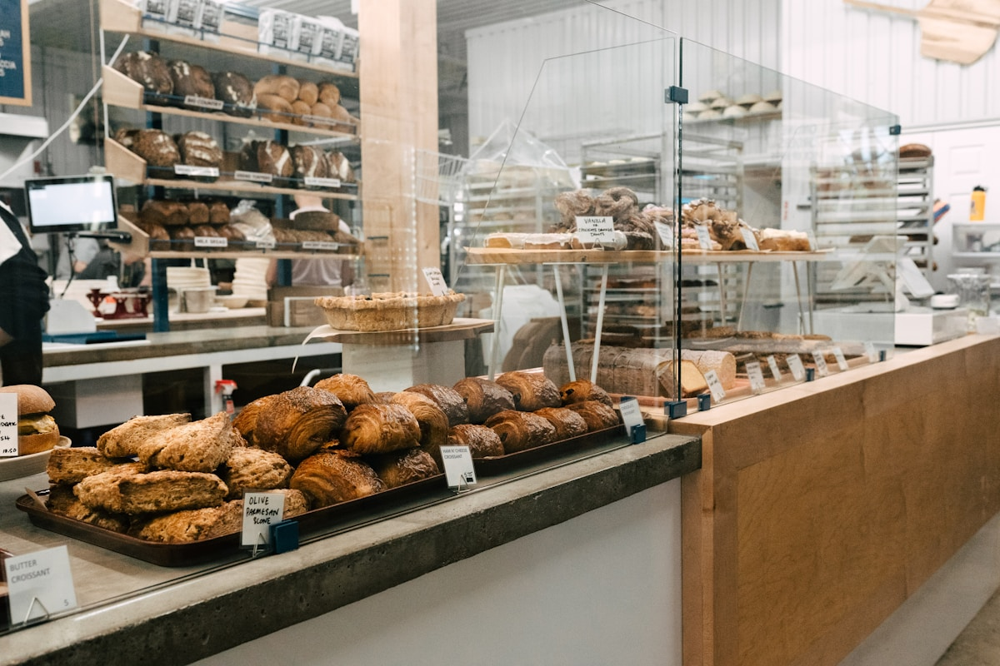
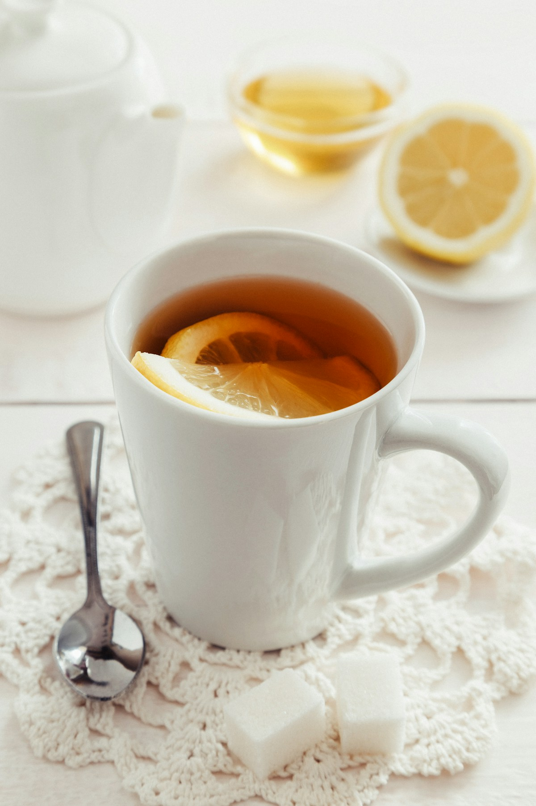
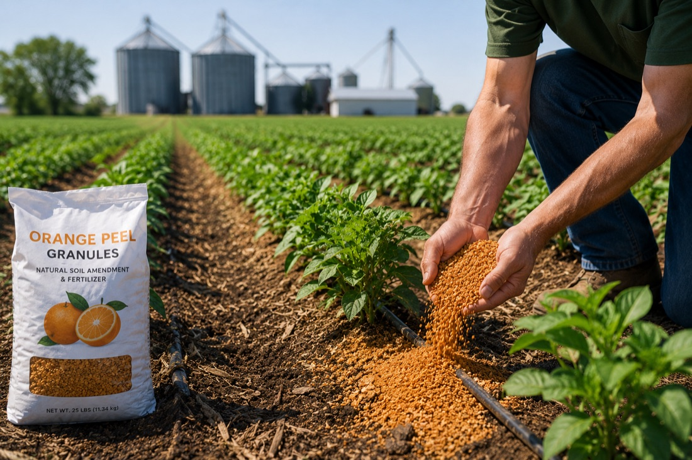
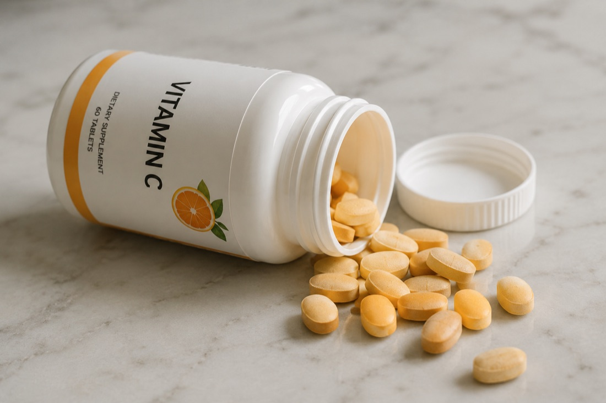

Flavor & Function
Food
Our upcycled citrus ingredients bring natural flavor, aroma, and functional value to a wide range of food applications, helping manufacturers meet clean-label goals while reducing waste.
Upcycled citrus ingredients designed to support clean-label, natural, and sustainability initiatives across the products people use every day.
As consumer demand shifts toward natural and sustainable ingredients, Apeeling helps manufacturers across five industries formulate with upcycled citrus, without compromising on function or quality.

Our upcycled citrus ingredients bring natural flavor, aroma, and functional value to a wide range of food applications, helping manufacturers meet clean-label goals while reducing waste.

Citrus is a defining flavor in the modern beverage market. Our ingredients deliver distinctive natural character and botanical appeal for established and emerging formats.
Naturally derived and sustainably sourced, our citrus ingredients support clean-beauty formulations where texture, fragrance, and botanical origin matter.

Upcycled citrus materials can extend their value into agricultural applications, advancing sustainability while keeping resources productive and in circulation.

From functional products to wellness formulations, our ingredients draw on the natural versatility of citrus to support healthier, more intentional living.
Tell us about your application and we'll help you explore how upcycled citrus can fit your formulation.